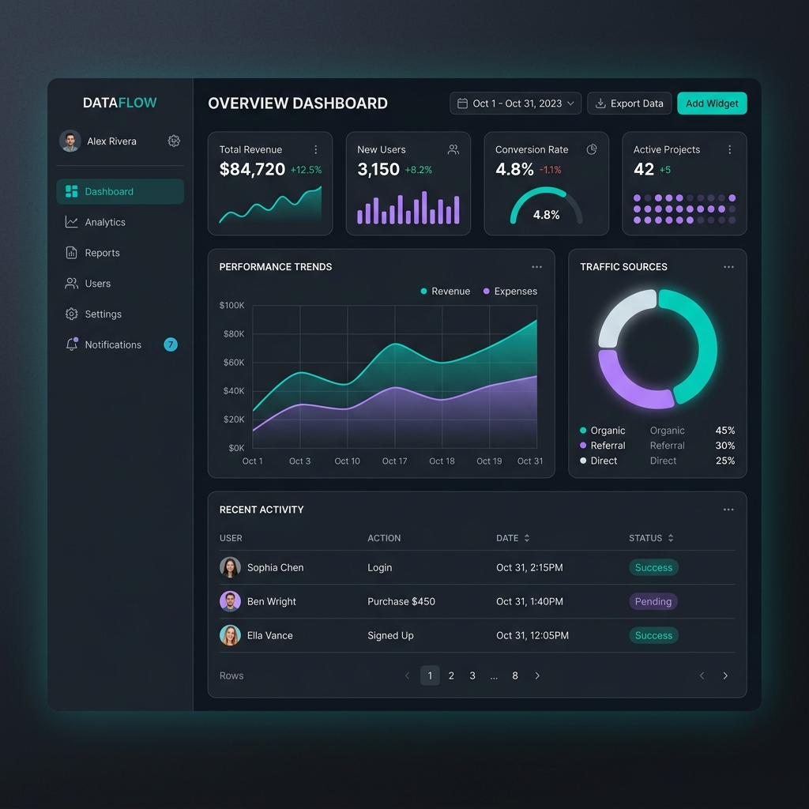
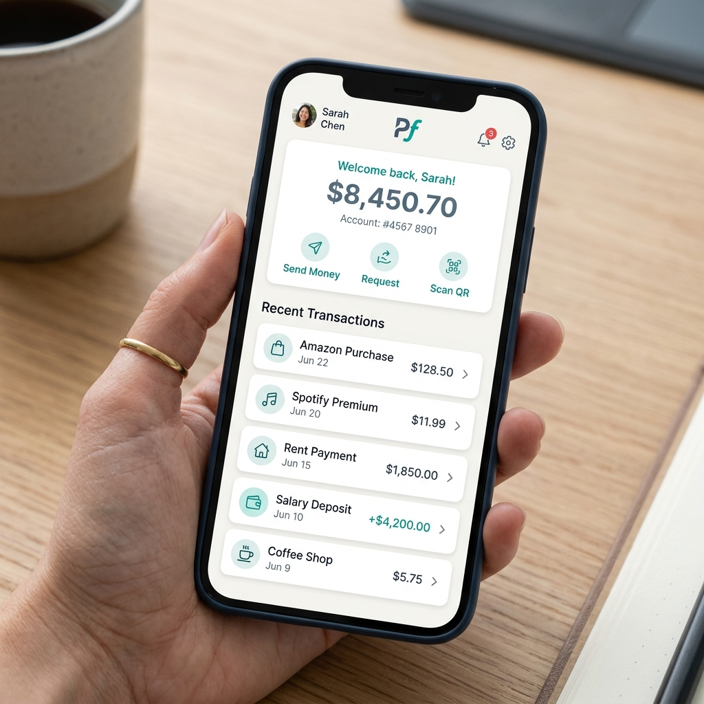

My Projects
A collection of web applications designed with semantic HTML5 and optimized for assistive technologies like screen readers and keyboard-only navigation.

A collection of web applications designed with semantic HTML5 and optimized for assistive technologies like screen readers and keyboard-only navigation.

